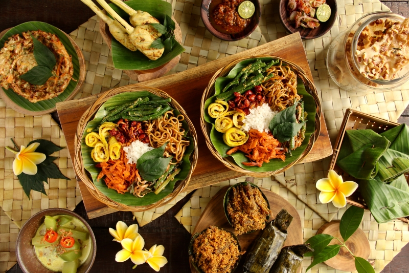

Resep asli Nusantara
Setiap hidangan diambil dari warisan kuliner Indonesia, dengan sentuhan modern tanpa meninggalkan rasa autentik.
Merawat cita rasa Nusantara dengan bumbu tradisional, bahan segar, dan sajian hangat untuk setiap keluarga.
Restoran Nusantara Maria lahir dari keinginan untuk menghadirkan masakan Indonesia yang autentik, hangat, dan terasa seperti dibuat di rumah sendiri. Setiap hidangan kami dibuat dengan resep turun-temurun dan rempah yang diproses setiap hari.
Dari rendang Padang sampai gudeg Jogja, kami membawa beragam cita rasa dari Sabang hingga Merauke ke dalam satu meja. Tujuan utama kami adalah menghadirkan pengalaman makan yang tidak hanya enak, tetapi juga mengingatkan pada kehangatan tradisi dan kebersamaan.

Nilai yang kami pegang dalam setiap hidangan dan pelayanan.
Setiap hidangan diambil dari warisan kuliner Indonesia, dengan sentuhan modern tanpa meninggalkan rasa autentik.
Kami memilih bahan baku pilihan dan mengolahnya dengan takaran bumbu yang presisi agar rasa tetap konsisten.
Hidangan kami cocok untuk makan bersama keluarga, teman, maupun acara kecil di rumah maupun kantor.
Beragam hidangan khas Indonesia yang kami hadirkan dengan hati.
Sumatera Barat
Jakarta
Yogyakarta
Jawa Timur
Bali
Betawi